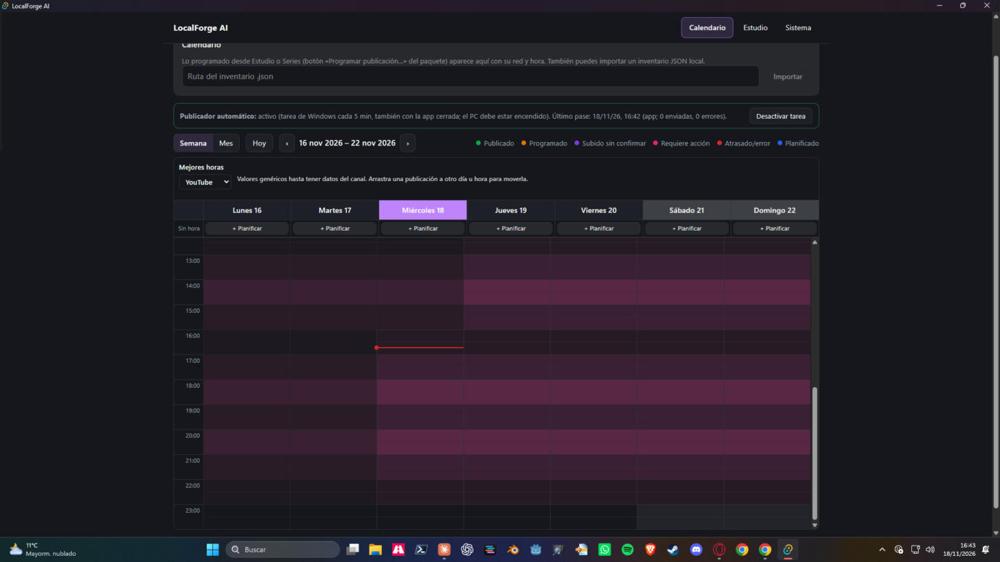
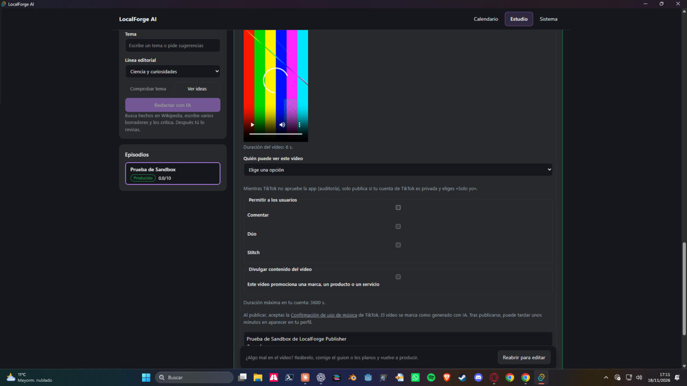
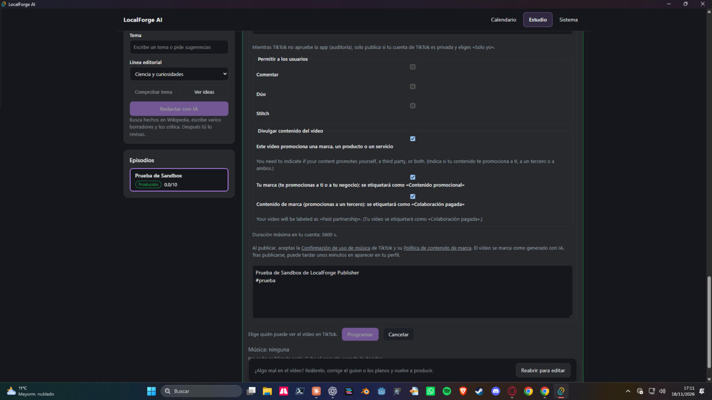
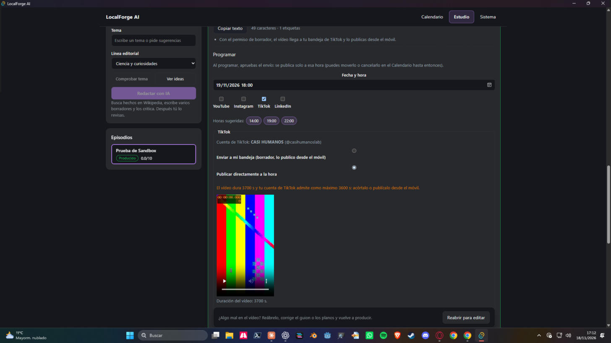
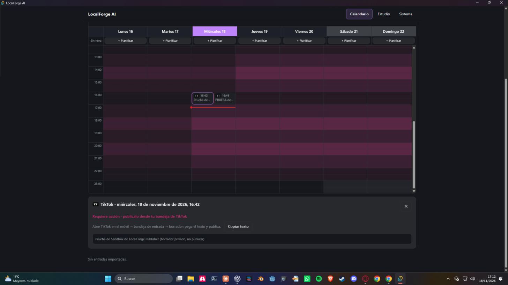

Features
Only what the app does today.
Calendar
See every planned and scheduled post on a weekly or monthly calendar. Open a post to read its caption, copy it, change its text, move it to another date and time, or cancel it before it is sent.

Scheduling on several networks
Choose a date and time, tick the networks (TikTok, YouTube, Instagram, LinkedIn, as available for your connected accounts) and review the caption of each one. Scheduling is your approval: the app sends the post at that time, and you can still move or cancel it in the calendar until then.
TikTok
- Connect with TikTok Login Kit. You authorize in your own browser. The app never sees your TikTok password.
- Send to your inbox (draft). At the scheduled time the video arrives in your TikTok inbox as a draft and you finish publishing from the TikTok app. Tested end to end on 18 November 2026 with TikTok's Sandbox: TikTok confirmed the upload as delivered to the inbox.
- Post directly. The app shows your TikTok account name and the privacy options TikTok allows for it. You choose who can view the video (there is no default), whether comments, duets and stitches are allowed (all off unless you turn them on), and whether the video promotes a brand, product or service.
- Status. The app asks TikTok for the status of each upload and shows the result.
- AI-generated label. Videos are marked as AI-generated.
Direct post will be available once TikTok audits the app. Until then TikTok only lets unaudited apps post privately, and only to accounts set to private, so direct posting is not yet in use. The screens below show what you will see before a direct post is sent; the draft flow is the one that works today.




Safe handling of access
Client secrets and access tokens are stored in the Windows Credential Manager, not in the app's database or logs. You can forget the app's credentials or disconnect an account from the app at any time.
Local backups
The app can create a backup copy of its local database and restore it later.